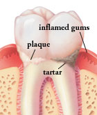
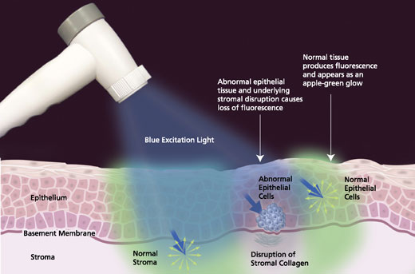

Periodontal Care
Periodontal treatment is necessary when various conditions affect the health of your gums and the regions of your jawbone that hold your teeth in place. Retaining your teeth is directly dependent on proper periodontal care and maintenance.
Healthy gums enhance the appearance of your teeth, like a frame around a beautiful painting. When your gums become unhealthy, they can either recede or become swollen and red.
In later stages, the supporting bone is destroyed and your teeth will shift, loosen, or fall out. These changes not only affect your ability to chew and speak. They also spoil your smile.
About Periodontal Disease
Periodontal diseases are infections of the gums that gradually destroy the support of your natural teeth. Dental plaque is the primary cause of gum disease in genetically-susceptible individuals. Bacteria found in plaque produce toxins or poisons that irritate the gums. They may cause them to turn red, swell, and bleed easily. If this irritation is prolonged, the gums separate from the teeth causing pockets (spaces) to form. Plaque can also harden into a rough, porous substance known as calculus (or tartar). This can occur both above and below the gum line.
As periodontal diseases progress, the supporting gum tissue and bone that holds teeth in place deteriorate. If left untreated, this leads to tooth loss.
However, don't be fooled. With periodontal disease, bleeding, redness, and swelling do not have to be present. Further, pain is usually not associated with periodontal disease. This disease damages the teeth, gum, and jawbone of more than 80 percent of Americans by age 45.



Preventing Gum Disease
Adults over the age of 35 lose more teeth to gum diseases than from cavities. Three out of four adults are affected at some time in their life. The best way to prevent cavities and Periodontal Diseases is by daily thorough tooth brushing and flossing techniques and regular professional examinations and cleanings. Unfortunately, even with the most diligent home dental care, people still can develop some form of periodontal disease. Once this disease starts, professional intervention is necessary to prevent its progress.
Other important factors affecting the health of your gums include:
- Tobacco usage
- Diabetes
- Stress
- Clenching and grinding teeth
- Medication
- Poor nutrition
Periodontal Disease and Tobacco
You are probably familiar with the links between tobacco use and lung disease, cancer, and heart disease.
Current studies have now linked periodontal disease with tobacco usage. These cases may be even more severe than those of non-users of tobacco. There is a greater incidence of calculus formation on teeth, deeper pockets between gums and teeth as well as greater loss of the bone and fibers that hold teeth in your mouth. In addition, your chance of developing oral cancer increases with the use of smokeless tobacco.
Chemicals in tobacco such as nicotine and tar slow down healing and the predictability of success following periodontal treatment.
Problems caused by tobacco include:
Lung disease, heart disease, cancer, mouth sores, gum recession, loss of bone and teeth, bad breath, tooth staining, less success with periodontal treatment, and with dental implants.
Quitting tobacco will reduce the chance of developing the above problems.
Diabetes and Oral Health
Individuals suffering from diabetes, especially uncontrolled diabetics, have a higher risk of developing bacterial infections of the mouth. These infections may impair your ability to process insulin, resulting in greater difficulty with controlling your diabetes. Periodontal diseases will be more severe than those of a non-diabetic and treatment more difficult. However, well-controlled diabetics have a lower incidence of cavities.
Steps to prevent periodontal disease include daily brushing and flossing to remove plaque from your teeth and gums, regular dental visits for professional cleaning, and regular periodontal evaluation. Your health professional must also be told of your history and the current status of your condition. And finally, you can help resist periodontal infection by maintaining control of your blood sugar levels.
Women and Periodontal Health
Throughout a woman's life, hormonal changes affect tissue throughout the body. Fluctuations in levels occur during puberty, pregnancy and menopause. At these times, the chance of periodontal disease may increase, requiring special care of your oral health.
Puberty
During puberty, there is increased production of sex hormones. These higher levels increase gum sensitivity and lead to greater irritations from plaque and food particles. The gums can become swollen, turn red, and feel tender.
Menstruation
Similar symptoms occasionally appear several days before menstruation. There can be bleeding of the gums, bright red swelling between the teeth and gum, or sores on the inside of the cheek. The symptoms clear up once the period has started. As the amount of sex hormones decrease, so do these problems.
Pregnancy
Your gums and teeth are also affected during pregnancy. Between the second and eighth month, your gums may also swell, bleed, and become red or tender. Large lumps may appear as a reaction to local irritants. However, these growths are generally painless and not cancerous. They may require professional removal, but usually disappear after pregnancy.
Periodontal health should be part of your prenatal care. Any infections during pregnancy, including periodontal infections, can place a baby's health at risk.
The best way to prevent periodontic infections is to begin with healthy gums and continue to maintain your oral health with proper home care and careful periodontic monitoring.
Oral Contraceptives
Swelling, bleeding, and tenderness of the gums may also occur when you are taking oral contraceptives, which are synthetic hormones.
You must mention any prescriptions you are taking, including oral contraceptives, prior to medical or dental treatment. This will help eliminate the risk of drug interactions, such as antibiotics with oral contraceptives - where the effectiveness of the contraceptive can be lessened.
Menopause
Changes in the look and feel of your mouth may occur if you are menopausal or post-menopausal. They include feeling pain and burning in your gum tissue and salty, peppery, or sour tastes.
Careful oral hygiene at home and professional cleaning may relieve these symptoms. There are also saliva substitutes to treat the effects of dry mouth.
Oral Hygiene
While brushing the outside surfaces of your teeth, position the brush at a 45-degree angle where your gums and teeth meet. Gently move the brush in a circular motion several times using small, gentle strokes. Use light pressure while putting the bristles between the teeth, but not so much pressure that you feel any discomfort.
When you are done cleaning the outside surfaces of all your teeth, follow the same directions while cleaning the inside of the back teeth.
To clean the inside surfaces of the upper and lower front teeth, hold the brush vertically. Make several gentle back-and-forth strokes over each tooth. Don't forget to gently brush the surrounding gum tissue.
Next you will clean the biting surfaces of your teeth. To do this use short, gentle strokes. Change the position of the brush as often as necessary to reach and clean all surfaces. Try to watch yourself in the mirror to make sure you clean each surface. After you are done, rinse vigorously to remove any plaque you might have loosened while brushing.
If you have any pain while brushing or have any questions about how to brush properly, please be sure to call the office.
How to Floss
Periodontal disease usually appears between the teeth where your toothbrush cannot reach. Flossing is a very effective way to remove plaque from those surfaces. However, it is important to develop the proper technique. The following instructions will help you, but remember it takes time and practice.
Start with a piece of floss (waxed is easier) about 18" long. Lightly wrap most of the floss around the middle finger of one hand. Wrap the rest of the floss around the middle finger of the other hand.
To clean the upper teeth, hold the floss tightly between the thumb and forefinger of each hand. Gently insert the floss tightly between the teeth using a back-and-forth motion. Do not force the floss or try to snap it in to place. Bring the floss to the gum line then curve it into a C-shape against one tooth. Slide it into the space between the gum and the tooth until you feel light resistance. Move the floss up and down on the side of one tooth. Remember there are two tooth surfaces that need to be cleaned in each space. Continue to floss each side of all the upper teeth. Be careful not to cut the gum tissue between the teeth. As the floss becomes soiled, turn from one finger to the other to get a fresh section.
To clean between the bottom teeth, guide the floss using the forefinger of both hands. Do not forget the backside of the last tooth on both sides, upper and lower.
When you are done, rinse vigorously with water to remove plaque and food particles. Do not be alarmed if during the first week of flossing your gums bleed or are a little sore. If your gums hurt while flossing you could be doing it too hard or pinching the gum. As you floss daily and remove the plaque your gums will heal and the bleeding should stop.


A pamphlet about this topic is available in our office.
Caring For Sensitive Teeth
Sometimes after dental treatment, teeth are sensitive to hot and cold. This should not last long, but only if the mouth is kept clean. If the mouth is not kept clean the sensitivity will remain and could become more severe. If your teeth are especially sensitive, consult with your doctor. They may recommend a medicated toothpaste or mouth rinse made especially for sensitive teeth.
Choosing Oral Hygiene Products
There are so many products on the market it can become confusing and choosing between all the products can be difficult. Here are some suggestions for choosing dental care products that will work for most patients.
Automatic and "high-tech" electronic toothbrushes are safe and effective for the majority of the patients. Oral irrigators (water spraying devices) will rinse your mouth thoroughly, but will not remove plaque. You need to brush and floss in conjunction with the irrigator. We see excellent results with electric toothbrushes called Rotadent and Interplak.
Some toothbrushes have a rubber tip on the handle, this is used to massage the gums after brushing. There are also tiny brushes (interproximal toothbrushes) that clean between your teeth. If these are used improperly you could injure the gums, so discuss proper use with your doctor.
If used in conjunction with brushing and flossing, fluoride toothpastes and mouth rinses can reduce tooth decay as much as 40 percent. Remember, these rinses are not recommended for children under six years of age. Tartar control toothpastes will reduce tartar above the gum line, but gum disease starts below the gum line so these products have not been proven to reduce the early stage of gum disease.
Anti-plaque rinses, approved by the American Dental Association, contain agents that may help bring early gum disease under control. Use these in conjunction with brushing and flossing.
Your periodontist is the best person to help you select the right products that are best for you.
Professional Cleaning
Daily brushing and flossing will keep dental calculus to a minimum, but a professional cleaning will remove calculus in places your toothbrush and floss have missed. Visit your periodontist, as he or she is an important part of your program to prevent gum disease. Keep your teeth for your lifetime.
Oral Pathology
The inside of the mouth is normally lined with a special type of skin (mucosa) that is smooth and coral pink in color. Any alteration in this appearance could be a warning sign for a pathological process. The most serious of these is oral cancer. The following can be signs at the beginning of a pathologic process or cancerous growth:
- Reddish patches (erythroplasia) or whitish patches (leukoplakia) in the mouth.
- A sore that fails to heal and bleeds easily.
- A lump or thickening on the skin lining the inside of the mouth.
- Chronic sore throat or hoarseness.
- Difficulty in chewing or swallowing.
These changes can be detected on the lips, cheeks, palate, and gum tissue around the teeth, tongue, face, and/or neck. Pain does not always occur with pathology and, curiously, is not often associated with oral cancer. However, any patient with facial and/or oral pain without an obvious cause or reason may also be at risk for oral cancer.
We would recommend performing an oral cancer self-examination monthly and remember that your mouth is one of your body's most important warning systems. Do not ignore suspicious lumps or sores. Please contact us so we may help.
VelScope (for cancer detection)
The VELscope Vantage System is the only adjunctive Oral Cancer Screening System commercially available today using patented Tissue Fluorescence Discovery Technology. In 2 or 3 minutes, the best tool to enhance the visualization of oral mucosal abnormalities that may not be apparent or visible to the naked eye, such as Oral Cancer, premalignant dysplasia, and other oral tissue abnormalities. Remember: early discovery is key.

Here's how it works. The Velscope gives off a blue light on the inside of a patient's mouth. Oral tissues then react to that flourescent light. Through the scope, a healthy mouth turns light green. Problem areas shine maroon.